Smart Contracts and their Security: Insights and Lessons
1. Introduction
In recent years, blockchain technology has garnered significant attention for its potential to revolutionize various industries, and at the core of this revolution lies smart contracts. These self-executing contracts offer numerous advantages, such as efficiency and automation, while reducing the need for intermediaries.
However, as with any technology, smart contracts come with their own set of security challenges that must be addressed to ensure their safe and reliable use. This report delves into the technical workings of smart contracts, their vulnerabilities, and the lessons learned from significant security breaches in the decentralized finance (DeFi) space.
2. Background of Smart Contracts
2.1 What are Smart Contracts?
Smart contracts are digital agreements that are written in code and automatically executed when predefined conditions are met. They operate on blockchain platforms, with Ethereum being one of the most prominent.
Unlike traditional contracts, smart contracts eliminate the need for intermediaries such as banks or lawyers, offering a self-governing mechanism that executes and enforces the agreement between parties.
The decentralized nature of blockchain ensures that smart contracts are tamper-resistant, with their execution and verification distributed across numerous nodes. This increases trust in the system, as no single entity can alter the contract’s terms once deployed.
2.2 How does it work?
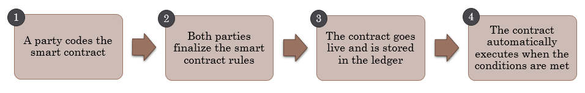
2.3 Key Features of Smart Contracts:
Self-execution: Terms are executed when the conditions coded into the contract are met.
Irreversibility: Once a contract is deployed on the blockchain, it cannot be modified.
Transparency: All parties can see the contract and its execution, which is public in nature.
Despite these advantages, the immutability and transparency of smart contracts introduce security concerns, especially when bugs or malicious exploits are discovered.
2.4 Evolution of Smart contracts
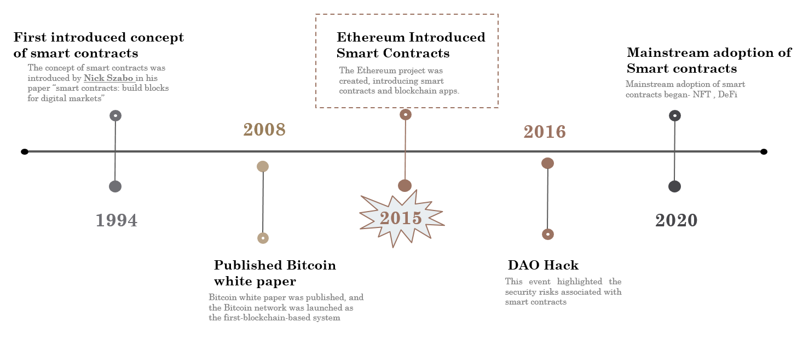
Smart contracts gained widespread attention with the launch of Ethereum in 2015, which provided a flexible and programmable platform for developers. Unlike Bitcoin’s limited scripting language, Ethereum allowed developers to write Turing-complete programs, enabling the creation of decentralized applications (dApps).
2.5 Ethereum’s Architecture (High-Level)
Ethereum’s architecture is pivotal for smart contract functionality. It consists of:
Blocks: Store transaction records and smart contracts.
Consensus Layer: Ensures that contract outcomes are consistent and validated across the network.
Smart Contracts: Self-executing contracts with the agreement terms directly written into code.
Miners: Validate and incorporate smart contract transactions to the blockchain.
Transaction Pool: A queue where unprocessed transactions are waiting to be validated.
Node: Each node can execute smart contracts and verify outcomes independently.
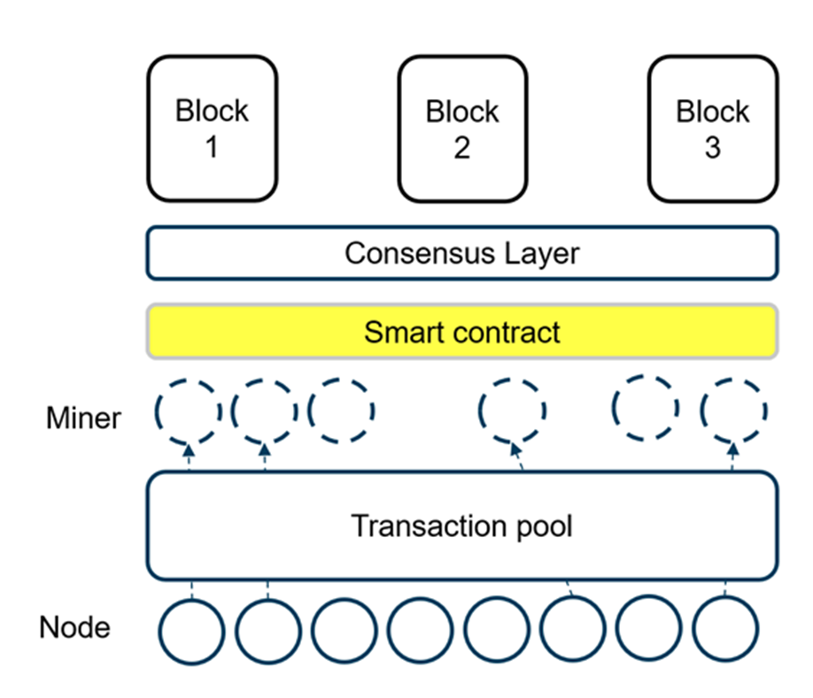
The decentralized execution and trustless environment of smart contracts are one of Ethereum’s unique selling points, but the complexity of the system has also exposed numerous vulnerabilities.
3. Benefits and Challenges
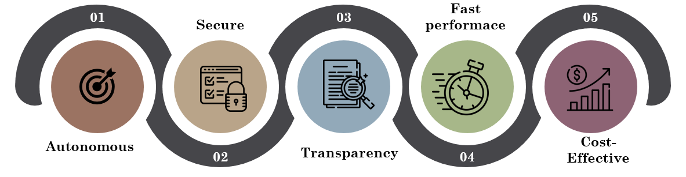
Smart contracts offer several advantages, including:
Automation: Once deployed, smart contracts automatically execute based on the logic embedded within them.
Cost Efficiency: By eliminating intermediaries, smart contracts reduce transaction costs.
Trustless Agreements: Parties do not need to trust each other, as the blockchain enforces the contract.
However, smart contracts can also pose significant security challenges. These include coding errors, external dependencies (e.g., oracles for off-chain data), and a lack of privacy in public blockchains. The inability to modify or update smart contracts once deployed can also lead to catastrophic failures if bugs or security holes are found.
3.1 Top 10 Smart Contract Vulnerabilities
According to the Open Worldwide Application Security Project (OWASP), an organization dedicated to software security, the top 10 smart contract vulnerabilities are:
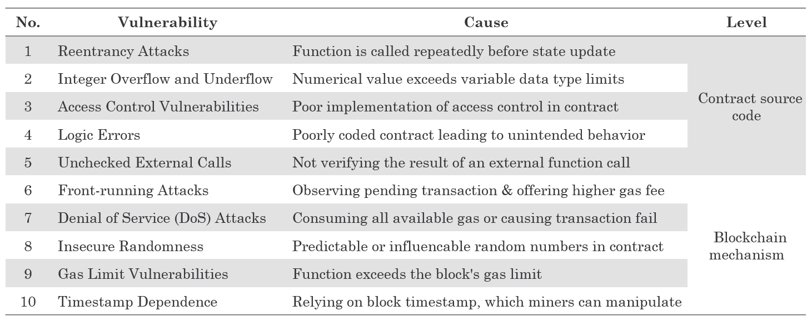
3.2 How many vulnerable contracts remain?
As mentioned previously, smart contracts are irreversible and cannot be rectified unilaterally upon deployment. Hence we have also examined research that sought to assess how many vulnerable contracts have been deployed and continue to remain in the various blockchains.
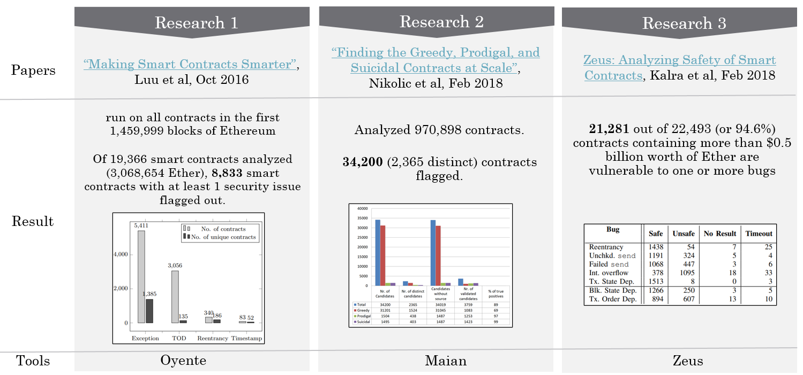
4. Internal Vulnerabilities of Smart contracts
One of the biggest challenges facing smart contracts is their inherent coding vulnerabilities. These arise from human error, lack of awareness about blockchain mechanisms, or oversights in logic.
Below are some key internal vulnerabilities:
Reentrancy Attacks: Reentrancy is one of the most notorious vulnerabilities, as demonstrated in the 2016 DAO hack, where attackers exploited the recursive nature of Ethereum smart contracts. By repeatedly calling a function before the balance was updated, they were able to drain funds, leading to a loss of over $150 million in Ether.
Solution: One way to mitigate this is through the introduction of the
REVERTopcode in Ethereum, which halts contract execution if errors occur, along with gas refund mechanisms.Arithmetic Overflows: The PoWH Coin Ponzi scheme suffered from an overflow bug, allowing an attacker to exploit fixed-size data types. The vulnerability stemmed from the limitation that integers can only store a certain range of values, and exceeding this range results in erroneous behavior.
Solution: Developers now use libraries like SafeMath, which ensure arithmetic operations do not overflow. However, these libraries must be implemented with caution.
Public Visibility: Publicly visible code and data are often exploited by attackers, as demonstrated in several high-profile hacks. Attackers can exploit publicly accessible functions or variables that are not adequately secured.
Solution: Better design practices and understanding the visibility of variables and functions in Solidity (the primary language for Ethereum smart contracts) can mitigate these risks.
5. Lessons from major Smart Contract hacks
Several smart contract vulnerabilities have been exploited in the past, resulting in large-scale financial losses. Some of the most significant lessons come from real-world case studies:
5.1 DAO Hack (2016)
One of the most infamous events in blockchain history, this attack highlighted the importance of addressing reentrancy in smart contract code. It led to the introduction of Ethereum Improvement Proposals (EIPs) that revamped security protocols, such as the REVERT opcode for error handling and better gas calculation mechanisms.
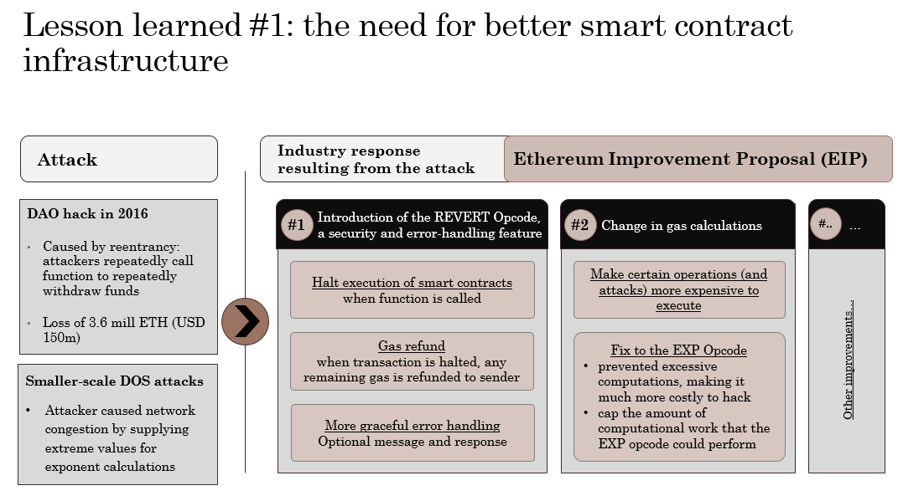
5.2 Parity Multi-Sig Wallet Hack (2017)
This attack exploited a coding flaw related to integer overflow, resulting in millions of dollars worth of Ether being stolen from multi-signature wallets. It underscored the need for more rigorous security audits and formal verification tools to ensure that contracts behave as expected in all execution scenarios.
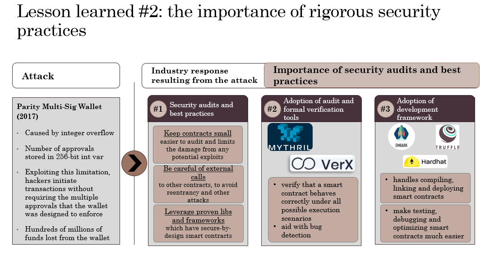
6. External Vulnerabilities: Oracles and Data Dependencies
Smart contracts are often reliant on external data sources, called oracles, which provide off-chain data to the blockchain. This reliance introduces vulnerabilities because oracles can be manipulated or compromised, leading to incorrect data being fed into the contract. For example:
Synthetix Oracle Failure (2019): In this case, a DeFi protocol experienced an oracle malfunction that provided an inflated exchange rate for the South Korean won (KRW), resulting in a potential $1 billion loss due to incorrect trades executed by bots.
bZx Protocol Attack (2020): A flash loan attack leveraged a manipulated oracle to inflate asset prices and exploit the system, leading to significant profits for the attacker.
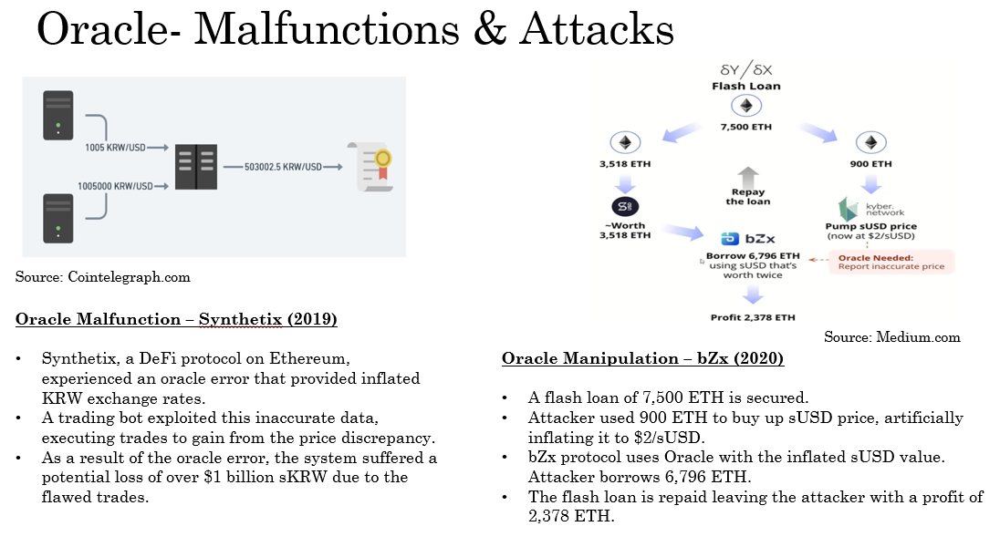
6.1 Oracles - Security Measures
Decentralized Oracles:
Using multiple oracles can reduce the risk of manipulation, distributing trust across several data providers and make it harder for attackers to manipulate the oracle/s.
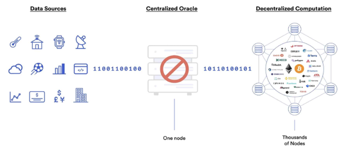
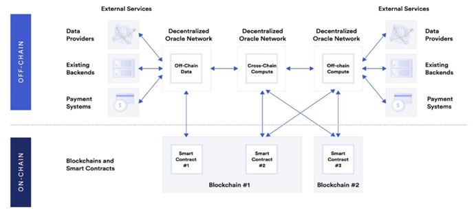
Time-lock Mechanisms:
Introducing a delay between oracle data retrieval and contract execution can allow for verification and mitigate real-time manipulation.
Economic Incentives and Penalties:
Reward oracles for providing accurate and timely data.
Penalize oracles that provide incorrect data, making malicious behavior costly.
Verifying Data Sources:
Authenticity proofs – use 3rd party to notarise
Trusted Execution Environment (TEE) – use trusted hardware
Regular Audits:
Periodically audit oracle systems and their data sources for vulnerabilities.
Fallback Mechanisms:
Backup data sources or alternative oracles in case of primary oracle failure or compromise.
7. Smart Contract Privacy issues
Smart contracts operating on public blockchains are inherently transparent, meaning that anyone can view the contract’s code, transaction history, and balances. While this transparency is beneficial for auditing and trust, it creates privacy concerns, especially for enterprise use cases where confidentiality is essential.
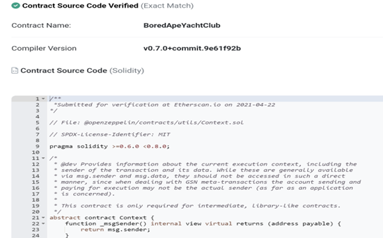
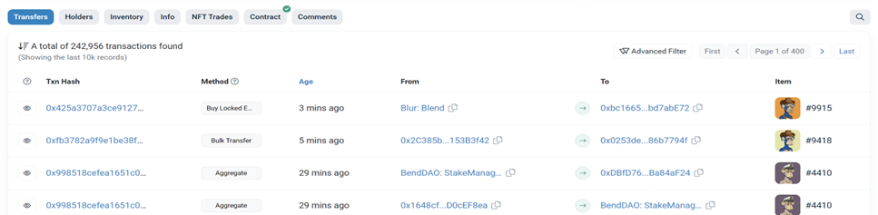
Some emerging solutions for privacy in smart contracts include:
- Secure Multi-Party Computation (SMPC): This cryptographic technique allows multiple parties to compute a function on their inputs without revealing the actual data. It ensures that only the final result is shared, preserving the confidentiality of the original data.
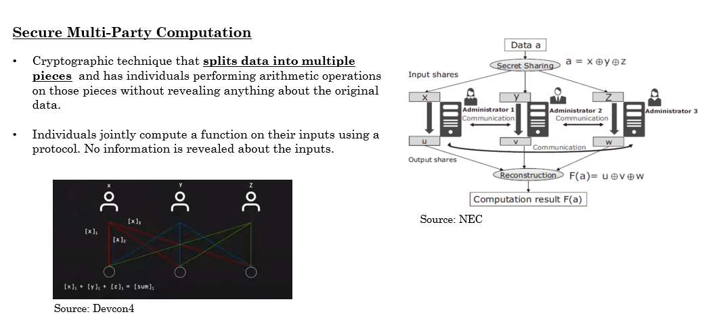
- Trusted Execution Environments (TEEs): These secure hardware enclaves, like Intel’s SGX, provide a private computing environment for executing smart contracts. Data processed within the TEE is protected from external tampering or observation.
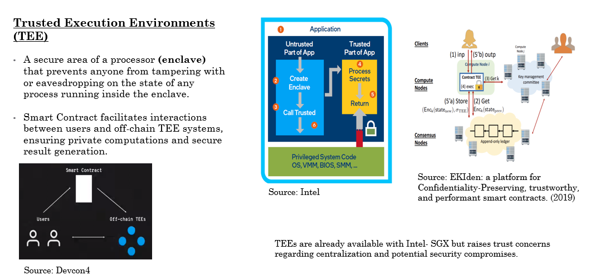
8. Conclusion
Smart contracts have undoubtedly changed the landscape of decentralized finance and applications. However, their potential is limited by security vulnerabilities, both internal (coding issues) and external (oracle manipulation). While the industry is making strides with better security tools, formal verification, and audit frameworks, there is still much work to be done.
Moving forward, key areas of focus should include:
Scalability without compromising security: As smart contracts grow in complexity, developers must balance performance with security.
Interoperability: Smart contracts need to be able to function across different blockchains seamlessly.
Regulatory Frameworks: The legal status of smart contracts remains uncertain, and clearer regulations will be necessary as they are adopted in traditional financial systems.
Ultimately, the security of smart contracts will be an ongoing challenge as new vulnerabilities are discovered, making it imperative for developers and organizations to stay informed and implement best practices.
9. References
Blockchains. (2023, May 5). What Is A Smart Contract? A Complete Guide. 101 Blockchains. https://101blockchains.com/what-is-a-smart-contract/
Frankenfield, J. (2023, May 31). What are smart contracts on the blockchain and how they work. Investopedia. https://www.investopedia.com/terms/s/smart-contracts.asp
Ethereumbook. (n.d.). GitHub - ethereumbook/ethereumbook: Mastering Ethereum, by Andreas M. Antonopoulos, Gavin Wood. GitHub. https://github.com/ethereumbook/ethereumbook
IBM Supply Chain Intelligence Suite - Food Trust. (n.d.). https://www.ibm.com/products/supply-chain-intelligence-suite/food-trust
Trade Finance with Digital Blockchain | HSBC Malaysia. (n.d.). https://www.business.hsbc.com.my/en-gb/campaigns/reshaping-trade-finance-with-blockchain
OWASP Smart Contract Top 10 | OWASP Foundation. (n.d.). https://owasp.org/www-project-smart-contract-top-10/
Howell, J. (2023b, October 26). Top 10 DEFI Hacks You should know. 101 Blockchains. https://101blockchains.com/top-defi-hacks/
Graham, A. (2023, May 16). Largest DEFI Hacks (Top 10). https://www.buybitcoinbank.com/cryptocurrency/largest-defi-hacks
Lewandowska, P. (2023, June 27). Smart contract attacks: the most memorable blockchain hacks of all time. Nextrope. https://nextrope.com/smart-contract-attacks-the-most-memorable-blockchain-hacks-of-all-time/
Malynovskyi, V., & Malynovskyi, V. (2023, May 25). Top 17 smart contract hacks in 2021-2022 found by 4IRE. 4ire. https://4irelabs.com/articles/top-17-smart-contract-hacks/
Loi Luu, Duc-Hiep Chu, Hrishi Olickel, Prateek Saxena, and Aquinas Hobor. 2016. Making Smart Contracts Smarter. In Proceedings of the 2016 ACM SIGSAC Conference on Computer and Communications Security (CCS ’16). Association for Computing Machinery, New York, NY, USA, 254–269. https://doi.org/10.1145/2976749.2978309
Nikolic, I. (2018, February 16). Finding The Greedy, Prodigal, and Suicidal Contracts at Scale. arXiv.org. https://arxiv.org/abs/1802.06038
Kalra, S. (2018, February 18). ZEUS: Analyzing Safety of smart Contracts. IBM Research Publications. https://research.ibm.com/publications/zeus-analyzing-safety-of-smart-contracts
Analysis of the DAO exploit. (2016, June 18). Hacking Distributed. https://hackingdistributed.com/2016/06/18/analysis-of-the-dao-exploit/
Banisadr, E. (2019, November 27). How $800k Evaporated from the PoWH Coin Ponzi Scheme Overnight. Medium. https://medium.com/@ebanisadr/how-800k-evaporated-from-the-powh-coin-ponzi-scheme-overnight-1b025c33b530
DASP - TOP 10. (n.d.). https://dasp.co/#item-10
Ethereum. (n.d.). Smart contract security | ethereum.org. ethereum.org. https://ethereum.org/en/developers/docs/smart-contracts/security/
Team, C. (2023, August 29). Oracle Manipulation Attacks are Rising, Creating a Unique Concern for DeFi. Chainalysis. https://www.chainalysis.com/blog/oracle-manipulation-attacks-rising/
Ethereum. (n.d.-a). Oracles | Ethereum.org. ethereum.org. https://ethereum.org/en/developers/docs/oracles/
Muhs, D. (n.d.). Oracle Manipulation - Smart Contract Security Field Guide. https://scsfg.io/hackers/oracle-manipulation/
What is an oracle in blockchain? » explained | Chainlink. (n.d.). https://chain.link/education/blockchain-oracles
HAWK: The blockchain model of Cryptography and Privacy-Preserving smart Contracts. (2016, May 1). IEEE Conference Publication | IEEE Xplore. https://ieeexplore.ieee.org/document/7546538
EKIden: a platform for Confidentiality-Preserving, trustworthy, and performant smart contracts. (2019b, June 1). IEEE Conference Publication | IEEE Xplore. https://ieeexplore.ieee.org/document/8806762
Paradigm. (2019, May 22). Enigma— decentralized privacy layer: full review - Paradigm - Medium. Medium. https://medium.com/paradigm-research/enigma-detailed-review-on-the-project-dc713a17f5d2
Smart Contract Based Multi-Party Computation with Privacy Preserving and Settlement Addressed. (2018, October 1). IEEE Conference Publication | IEEE Xplore. https://ieeexplore.ieee.org/document/8611588
Integritee Network. (2023, October 5). TEE 101: How Intel SGX works and why we use it at Integritee. Medium. https://medium.com/integritee/tee-101-how-intel-sgx-works-and-why-we-use-it-at-integritee-5cb2957c050f
Project, G. (2018, November 20). Graphene-ng demo + DEVCON4 TEEs/SGX actions recap - The Golem Project - Medium. Medium. https://medium.com/golem-project/graphene-ng-demo-devcon4-tees-sgx-actions-recap-a2f84704ad01
Intel® Software Guard Extensions (Intel® SGX). (n.d.). Intel. https://www.intel.com/content/www/us/en/architecture-and-technology/software-guard-extensions.html
Enhancing FinTech Security with Secure Multi-Party Computation Technology : NEC Technical Journal | NEC. (n.d.). NEC. https://www.nec.com/en/global/techrep/journal/g16/n02/160211.html
J. Scholz (2023). EIP-150 and the 63/64 Rule for Gas. https://www.techtarget.com/searchsecurity/tip/Smart-contract-benefits-and-best-practices-for-security
A. Irei. Smart contract benefits and best practices for security. https://www.techtarget.com/searchsecurity/tip/Smart-contract-benefits-and-best-practices-for-security